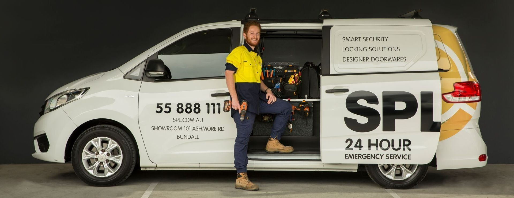

SPL Security has 8 mobile locksmith vans ready to assist you in your time of need, 24/7. Their fully equipped vans provide a range of Gold Coast locksmith services from master key systems and high security cylinders to key replacement and car lockouts. Using the expertise of your local Gold Coast locksmith at SPL will increase the level of security for the people and valuables in your property. Not just limited to your home, this type of security can also be used in your business, office and even your shop.
Residential & Home Locksmith : Securing what matters most. At SPL, they understand what matters most. That’s why they provide only the best locks, safes and home security systems to keep your home safe and secure. SPL also keeps your home looking great with a wide range of designer doorwares on display in our award winning showroom.
Commercial Locksmith : Guarding your assets. SPL offers a vast range of services to the commercial industry. From small retail outlets to large shopping centres and high rise buildings. SPL Security provides the highest quality systems, service and maintenance to keep your business secure.
It is important to check out the services offered by a locksmith before hiring them. Following are some of the many services offered by SPL Security locksmiths :

24 Hour Response
SPL Security has evolved from providing locksmith services only during fixed office hours to now providing locksmith services 24/7. Therefore, being able to service their valued customers when they need it most. You can approach him at any time of the day, for general or emergency services and they will come to your rescue.
Burglary Repair
In the case of a break-in, your property can undergo severe damage which need to be repaired promptly.
At SPL, they provide their customers with professional Gold Coast mobile locksmith service 24 hours a day to assist with burglary repairs. From emergency lock replacement to re-securing a property after a break-in or re-keying, they are the experts. Their vans are fully equipped and able to provide all locksmith services to residential or commercial buildings.
Installation of Security Cameras
SPL’s closed circuit television (CCTV) solution watches your Gold Coast home or business when you can’t. Initially developed as a means of security for banks and casinos. Today CCTV cameras have been developed to be a simple and inexpensive option to secure your home or business against theft and vandalism.
Taking Security a Step Further, Get a Safe
At SPL they have a huge range of residential and commercial safes to suit any home or business. Guard your jewellery, cash, documents and medical supplies or simply secure your rare or sentimental items from fire and theft.
SPL Security is one of the finest locksmith and security service providers on the Gold Coast since 1990. They have state of the art machinery and gadgets which will strengthen your home &/or business security against theft. Whether that threat is from inside out outside your property.
‘ Click here ’ or submit an inquiry through our contact page www.splsecurity.com.au/contact/ , alternately call us, any time on (07) 55 888 111.